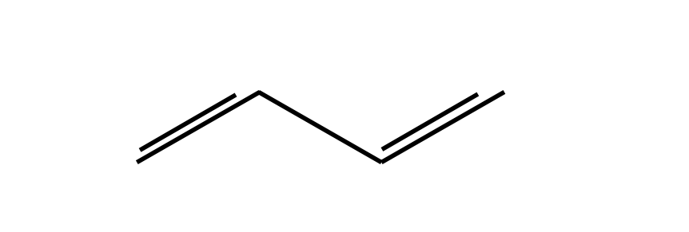
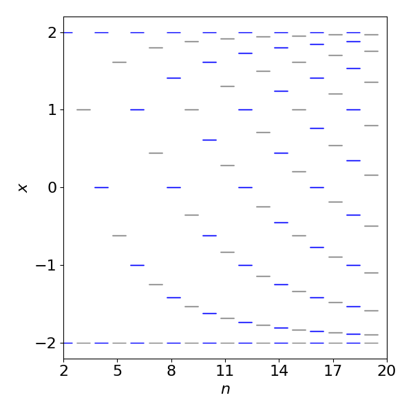

1 Determinants
Contents
1 Determinants#
# import all python add-ons etc that will be needed later on
%matplotlib inline
import numpy as np
import numpy.linalg as npalg # linear algebra library for determinants and matrices
import matplotlib.pyplot as plt
from sympy import *
init_printing() # allows printing of SymPy results in typeset maths format
plt.rcParams.update({'font.size': 14}) # set font size for plots
1 Notation: matrices and determinants#
Matrices are represented by square \([\cdots]\) or round \(( )\) brackets surrounding the block of numbers; determinants always by straight lines \(||\)and sometimes a pair of double straight lines \(|| \;||\). The following matrix has \(m = 4\) rows and \(n = 3\) columns. The elements of any matrix or determinant are referenced with two subscripts, so, if the matrix \(A\) has \(m\) rows and \(n\) columns, i.e. an \(m \times n\) matrix, the \(mn^{th}\) element is written as \(A_{mn}\) and the indexing is always row by column. The diagonal is only present in a square matrix or determinant and is the series of terms from top left to bottom right that have the same indices, e.g., \(a_{22}\). The anti-diagonal passes from top right to bottom left.
Figure 1. A \(2 \times 2\) square matrix and a \(4 \times 3\) matrix. Notice the subscript numbering scheme; the first index is the row the second the column. The diagonal elements always have the same two indices.
The square matrix has the same number of rows as columns, therefore \(m = n\) otherwise the matrix is rectangular. A one-dimensional matrix, Fig. 2 is also equivalent to either a row or a column vector; see Chapter 6.
The properties of determinants and some examples of their use are described first. Next, the various properties of matrices are described, followed by sections illustrating how matrices are used to solve a wide range of problems ranging from designing laser cavities, to calculating the symmetry of molecules to the selective breeding of plants.
Figure 2. A row and column matrix are also vectors.
2 Determinants#
The value of a determinant is always a number or a polynomial equation. Suppose a determinant consisting of the squares of the numbers one to four is
is value is \(1 \times 16-4\times 9=-20\) and in symbols
If there is common factor then this can be separated out first. In this determinant it is \(2\) but the multiplication factor is twice this i.e. \(4\)
The general case for a determinant \(M\) of size \(n\), with common factor \(a\), is
2.1 The characteristic equation#
In many situations, the determinant is made equal to zero; for example, suppose that the determinant is
then this is an alternative way of writing the quadratic equation \(x^2 - 1 = 0\), which is called the characteristic equation or characteristic polynomial.
2.2 Evaluating \(3 \times 3\) determinants#
One way of writing a \(3 \times 3\) determinant such as that of the squares of integers is
Its value can be determined in a similar way to the \(2 \times 2\) determinant. A pictorial method is shown below and is the same as used to calculate cross products, Chapter 6. The rules are
(a) Each number in the top row is multiplied by the \(2\times 2\) matrix formed excluding the values in the column underneath that number.
(b) the terms are summed but with alternate values being multiplied by \(-1\).
The first term is diagrammatically represented as shown below,
which evaluates to \(1 \times (25 \times 81 - 64 \times 36)\). The cofactor of the top left \((1, 1)\) element of the determinant is \((25 \times 81 - 64 \times 36)\). The second term is \(-4 \times (16 \times 81 - 49 \times 36)\), with cofactor \(-(16 \times 81 - 49 \times 36)\). Notice the extra minus sign with this term. Graphically this term is
and the third term is \(9 \times (16 \times 64 - 49 \times 25)\). It is worth remembering the order of doing the calculation for small determinants even though most calculations will be done using a computer. In expanded form the calculation above is,
Although the top row was used to lead us in factoring the determinant, we could just as easily use any one of the columns or rows with the appropriate cofactors.
The theory of determinants allows us, somewhat unexpectedly, to calculate a determinant from the number of ways of arranging the symbols of the determinant’s indices, i.e. a permutation. The top left element is labelled with indices \(11\), the next in the same row \(12\), and so on. The next row starts with indices \(21, 22\), and so forth as in Fig. 1. In a \(3 \times 3\) determinant the first index of each number of the triple number is always in the order \(1, 2, 3\); the second indices, which are also \(1, 2\) or \(3\), are used in all possible arrangements viz.:
All terms have first indices whose numbers are always in the order \(123\) and second indices in this order also, if rotated around one another. In the negative terms, the order of each of the second indices of a positive term is reversed. The determinant is then
2.3 Determinants have the following properties#
\(\quad\)(i) A common multiplier can be factored out of a determinant.
\(\quad\)(ii) If any two rows or two columns are equal, or if a row or column is zero, the determinant is zero.
\(\quad\)(iii) If any two row or columns are interchanged, then the value of the determinant changes sign.
\(\quad\)(iv) If any row or column is multiplied by a constant then the whole determinant is multiplied by that factor.
\(\quad\)(v) The determinant’s value is unaltered if a row or column is multiplied by a constant and then added to another row or column.
\(\quad\)(vi) The determinant of the product of two matrices and the product of each matrix’s determinant, \(|AB|=|A||B|\)
2.4 Evaluating determinants using Python and Sympy#
The numerical vale of a determinant is calculated by first defining the matrix size and filling in the values. If the matrix is very big the entries will have to be input via a algorithm, which means giving each row and column a value by setting up a double loop. To manipulate the matrix the linear algebra package is needed and this is imported at the top of this document where numpy and scipy are imported. Notice that an ‘array’ is used (rather than a ‘matrix’) and that there are a pair of square brackets surrounding the middle three sets of numbers.
M = np.array( [ [1,4,9], [16,25,36], [49,64,81] ] )
print(npalg.det(M))
-216.00000000000006
Using Sympy enables an algebraic determination of a determinant. In this case the matrix is defined slightly differently using the word Matrix(). The determinant is easily computed and produces a polynomial.
x = symbols('x')
M = Matrix([ [x,1,0], [1,x,x],[1,x,1] ]) # notice how the square brackets [] are arranged
M
M.det() # determinant produces a polynomial
(i) Rotation matrix#
To work out the determinant of the matrix \(\displaystyle \begin{vmatrix} \cos(x) & \sin(x)\\ -\sin(x) &\cos(x)\\ \end{vmatrix} \)
use the rule in equation 1
and by the well-known trigonometric identity, \(\cos^2(x) + \sin^2(x) = 1\). The determinant is therefore unity. This matrix is a rotation matrix and its use is described in Section 7. Because the determinant is one the matrix does not distort the object rotated.
(ii) Polynomial#
The determinant \(\displaystyle \begin{vmatrix} x & 1 & 1\\ 1 & x & 1 \\ 1 & 1 & x \\\end{vmatrix}=0\) is another way of writing a polynomial. Since there are three occurrences of x the determinant should produce a cubic equation. Expanding by using cofactors, as in equation (7.2), produces
The solution of this characteristic polynomial may be seen by inspection, which often means by trial and error; there are two roots with \(x = 1\) and one with \(x = -2\). If you are not sure, substitute these answers into the equation, or use Sympy as shown below.
x = symbols('x')
M = Matrix([ [x,1,1], [1,x,1],[1,1,x] ])
solve(M.det(),x)
3 The Huckel MO method#
In the Huckel molecular orbital approximation \(\pi\) bonding energies of molecules, ions, and radicals can be calculated. This method reflects the topology of the structure because only adjacent atoms interact with one another, and the change in energy with the length or angle of bonds is not included in the calculation. In this model of \(\pi\) bonding, each electron in a \(\pi\) orbital interacts only with \(\pi\) electrons on the nearest atoms. This interaction energy is calculated from the resonance (exchange) Coulomb energy integral, is conventionally given the symbol \(\beta\), and is negative since interaction is attractive. It has a value \(\approx -300\) kJ/mole, although estimates vary widely. The \(\pi\) electrons on any atom also have their own energy, which is the Coulomb self-energy integral, and this is labelled \(\alpha\). The interaction energies can be made into a determinant, called the secular determinant\(^*\), and which is then solved to find the energy. This determinant is formed by a set of simple rules; why it works is explained later on in Section 12.3 that describes eigenvalue - eigenvector equations, in particular the Secular equation, eqn. 32.
The determinant is formed from the rules:
(1)\(\quad\) Label the atoms as \(0 \to n-1\), and \(n = 4\) in the case of 1,3-butadiene. This produces an \(n \times n\) determinant. Labelling the atoms in this way effectively forms a basis set for the problem, see Section 12.8.
(2)\(\quad\) Each diagonal element has the energy \(\alpha - E\).
(3)\(\quad\) Each \(\pi\) electron when connected to a nearest neighbour has interaction energy \(\beta\). The basis set labelling determines where these go in the determinant. Using the labels starting as indicated in Figure 3, atoms \(0-1, 1-2, 2-3\) only have interaction energy \(\beta\), which means that \(\beta\) is entered at these positions in the determinant and the corresponding positions to make the determinant symmetrical. The reason for this is that interaction \(0-1\) is the same as \(1-0\) which makes the determinant Hermitian; see Section 4.9.
(4)\(\quad\) Any remaining entries in the determinant are zero and the determinant is made equal to zero.
\(^*\) The word ‘secular’ usually means ‘not religious’, but here it means ‘long-term’ in the sense of being time independent or unchanging as used in the study of mechanics.

Figure 3. Butadiene.
The determinant describing the interactions of the four \(\pi\) electrons of 1,3-butadiene has a tri-diagonal form. The numbers above the determinant refer to its position and to that of the atom in Fig. 7.3.
Note that the conventional \(\pi\) bonds are ignored; all that matters is where the \(\pi\) electrons are situated and because there are four electrons, there will be four energies and four molecular orbitals.
To solve the determinant some simplification helps and so each term is divided by \(\beta\), and letting \(\displaystyle x=\frac{\alpha-E}{\beta}\) the determinant becomes
We could solve the determinant by hand and then attempt to solve the quartic equation also by hand by factoring out terms or perhaps by plotting the function and looking for its roots where \(x = 0\). The Newton - Raphson method could also be used to find roots numerically and until recently, this would have been done. Instead, with Python the construction and solution of the Huckel determinant is straightforward. The matrix can be constructed manually or the scheme below can be used which will make the determinant for any linear polyene.
# Huckel determinant linear polyene
# The calculation is slow for large matrices n > 20 due to determinant evaluation
n, M, x = symbols('n, M, x') # use Sympy, define symbolic variables
n = 4 # size of matrix
M = zeros(n,n) # define empty matrix
for i in range(n): # fill matrix according to rules above
M[i,i] = x
if (i > -1) and (i<n-1):
M[i,i+1] = 1
M[i+1,i] = 1
pass
M
char_eqn = M.det() # Characteristic equation is expanded determinant
char_eqn
solve(char_eqn) # algebraically solve for roots
solve( char_eqn.evalf() ) # always use numberical solution for larger polynomials
The solutions give each of the values of \(x\) and as \(\displaystyle x=\frac{\alpha-\beta}{\beta}\) the four energies given by \(E=\alpha-\beta x\) and are,
Figure 4 shows the \(\mathrm{H\overset{\cdot\cdot}uckel }\) energy levels for butadiene measured as changes from \(\alpha\). The integral \(\beta\) is negative.
Left, Figure 4. Right Fig. 5. Left. \(\mathrm{H\overset{\cdot\cdot}uckel }\) energy levels for butadiene measured relative to \(\alpha\). The integral \(\beta\) is negative. Right. Figure 5. Graphical solution of the characteristic polynomial for butadiene.
Notice that when the energies are plotted out, Fig 4, they symmetrically span the energy \(\alpha\), which is the self-energy of the \(\pi\) electrons. If the interaction was zero because \(\beta = 0\), then the determinant would be diagonal and all the electrons would be degenerate with energy \(E = \alpha\). The initial energy, or rather the energy of \(4\pi\) electrons is \(4\alpha\); after the molecular orbital has formed the energy is \(2(\alpha + 1.618\beta) + 2(\alpha + 0.618\beta)\), a difference of \(2(1.618 + 0.618)\beta\) or \(4.472\beta\) and this is the energy gained or the stabilization energy, \(\beta\) being negative. This can be seen in the figure also. However, this is not really what is of interest because if the MO covers all the atoms, as it must, then the delocalization energy is of interest as it is the energy saved compared to two individual double bonds; these are equivalent to the \(\pi\) energy of two ethylene molecules which is \(4(\alpha + \beta)\). The delocalization energy saving is then
The characteristic polynomial can be plotted also, as shown in Fig.5, to convince you that the solutions are correct. The roots of the equation \((y = 0)\) can be seen to be at just greater than \(\pm 0.6\) and \(\pm 1.6\). A more detailed plot would give more accurate answers but not as exactly as the algebraic solution.
3.1 Huckel method for single rings. Circulant determinants#
When the molecule has a ring of delocalised electrons such as benzene the Huckel method can be treated rather simply using Circulant determinants. As an illustration suppose the molecule has a diamond or square shape then the determinant has extra terms in position \(0-3\) and \(3-0\) to join the first and last atoms, i.e
and this makes the matrix and its determinant circulant which means that each row contains the same elements but each is simply rotated by one place from its neighbour, in other words once the first row is known so is the whole matrix. This matrix and others like it are symmetrical about the diagonal. A symmetric matrix is one in which the matrix is equal to its transpose, i.e. \(M=M^T\), the transpose being the matrix with rows and columns replace with one another.
Following the previous calculation let \(\displaystyle x=\frac{\alpha-E}{\beta}\) and the determinant simplifies to
As this is quite small it is possible to expand it out by hand to form a polynomial, but of course this becomes virtually impossible for larger determinants and finding the roots even harder. In this case the polynomial is \(x^4+4x^2=0\).
Only in the case of a circulant determinant is there a simple way to find the roots no matter what its size. First write down a polynomial \(p(w)\) with coefficients that are the top row of the determinant, i.e.
The \(w\) here are the \(n\) complex roots of unity, see chapter 2, i.e. the roots are the solution to the equation \(w^n = 1 \).
where \(i=\sqrt{-1}\), and as \(n=4\) these are
which are the points \((1,0),\; (0,i),\;(-1,0),\;(0,-i)\) forming a square on the Argand diagram.
Substituting into the polynomial \(p\) for \(w_j\) will give roots of the equation that would otherwise have to be found by expanding the determinant, making it equal to zero and solving for \(x\). The result is
so the roots are, \(x_0=-2, x_1=0,x_2=2,x_3=0\) and replacing the substitution \(\displaystyle x=\frac{\alpha-E}{\beta}\) the \(n\) energies are \(\displaystyle E=\alpha +2\beta,\; \alpha,\;\alpha -2\beta,\;\alpha \) and as \(\beta\) is a negative quantity the energies put in order are
Normally the energy is taken relative to the self-energy \(\alpha\) meaning that the lowest level is \(2\beta\) below this and the highest \(-2\beta\) above. Adding four electrons produces two with lower and two unchanged in energy. Of course this particular molecule will be highly strained and can be in a singlet or more probably a triplet state with two electrons in the two orbitals with energy \(\alpha\). Huckel theory does not consider any such matters. It is based solely on allowing interaction to occur to nearest neighbours.
The method described is simple to use and can be generalised. The expansion of any circulant determinant with elements \(a_0,a_1\cdots, a_{n-1}\) is a product of terms, i.e.
where \(\displaystyle w_j= e^{-2\pi ij/n}\) and is one of the \(n\) complex roots of unity. In our particular case
and using De-Moivre’s and Euler’s theorems (Chapter 2)
and because as \(j\) is an integer \(e^{-2\pi ij}=1\), thus \(\displaystyle x_j= -2\cos(2\pi j/4)\) and therefore \(x_0=-2,x_1=2,x_2=0,x_3=0\) as was found above. Using \(E=\alpha-x\beta\) the energies are
The general case is simply
so that the energies of any ring can be found. Technically the solutions are called the eigenvalues.
In benzene the first row of the matrix equivalent to eqn. 1d is \(\begin{bmatrix}x & 1& 0&0&0&1\end{bmatrix}\) which produces energies \(\displaystyle E_j = \alpha-2\beta\cos\left(\frac{2\pi j}{6}\right),\; j=0,1,2\cdots 6\) which are in increasing order
which on adding \(6\) electrons clearly shows a diminution of energy compared to the same orbitals each with energy \(\alpha\). The delocalisation energy can be calculated as in section (iii) above.
When there is an odd number \(n\) of atoms, such as in cyclopentadiene the lowest energy level is always doubly degenerate with value \(\alpha +2\beta \cos(\pi/n)\) but for even numbered rings the lowest is a single energy level of \(\alpha+2\beta\). In all cases the uppermost energy is single values at \(\alpha-2\beta\). This means that the energy is never outside the range \(\alpha +2\beta \to \alpha-2\beta\). As the number of atoms increases more and more energy levels move towards the maximum and minimum energy and so fewer, relatively, are close to energy \(\alpha\).

Figure 5a. Energy levels for odd (grey) and even (blue) numbered ‘ring’ molecules such as benzene in terms of \(x=(\alpha-E)/\beta\).
In addition to the energies the shape, as in pattern, of the molecular orbital can also be calculated. These are technically called the eigenvectors. Later on in this chapter we discuss eigenvector and eigenvalue equations but it seems sensible to show what these do in the case of Huckel molecular orbitals. Again the circulant nature of the matrix/determinant allows a very simple calculation of the eigenvectors. There are \(n\) of these vectors of length \(n\). The values, when normalised, give the sign and size of the contribution of each p electron’s orbital to the full Huckel molecular orbital.
The eigenvectors \(v_j,\;(j=0,1,2,\cdots n-1)\) for circulant matrices are always simply the list of the powers of the \(n\) roots of unity, i.e they are the same for each circulant determinant of the same size. This is a direct consequence of the fact that the matrices are circular and have repeating values just as are the roots of zero or sines and cosines. The roots of zero \(w_j\) are raise to powers to form the (eigen) vector \(v_j\)
where the \([\cdots]^T\) indicates the transpose as eigenvectors are column vectors. With \(n=4\) they are,
These vectors are not normalised. To do this for a vector \(\begin{bmatrix} a&b&c&d\end{bmatrix}\) to find \(N\) calculate
where, because some entries are complex numbers, the absolute values have to be used; \(|b|^2\equiv b^*b\) where \(b^*\) is the complex conjugate. The normalsation is always \(1/\sqrt{n}\).
Some of the eigenvectors will always have entries that are complex numbers and so we cannot know what the contribution of that vector will have to the total electron density. However, as the circulant matrix is symmetric and real, some of the eigenvalues come in pairs which means that the real and imaginary parts of the eigenvectors are also eigenvectors. Thus we can separate the real and imaginary parts and make each an eigenvector. As long as the potential eigenvector satisfies the matrix equation \(\boldsymbol Cv=\lambda v\) (where \(\boldsymbol C\) is in this case the circulant matrix ) it is an eigenvector. Choosing \(v_1=\begin{bmatrix}1&0 &-1 &0\end{bmatrix}^T+i \begin{bmatrix} 0&1 & 0 &-1\end{bmatrix}^T\) satisfies the condition so there are now four real eigenvectors. Vector \(v_3\) could have been chosen instead of \(v_1\), which would simply correspond to a rotation of the values.
It is the pattern of the molecular orbital, i.e. its symmetry that is important. The lowest energy has all \(\pi\) electrons with the same phase which is the eigenvector where each entry is one, the highest energy is that with alternating entries \(\pm 1\). In benzene this has three nodes but just two when the molecule is square. In between these there are the other two with \(1\) node each. As a ‘rule of thumb’ an increase in the number of nodes indicates an increase in energy.
Figure 5b. \(\mathrm{H\overset{\cdot\cdot}uckel }\) molecular orbital shapes. The middle two images are made by separating real and imaginary parts of \(v_1\). The circles represent positive and negative phases of the \(\pi\) orbital (\(1\) and \(-1\) in the eigenvector) and the absence of a circle, zero contribution from that orbital. The energies increase from left to right and are \(\alpha+2\beta,\;\alpha,\;\alpha,\;\alpha-2\beta\). The dotted lines are the nodes separating positive and negative phases. The more nodes there are less delocalised the electrons are and the higher the energy.
Interaction between \(\pi\) orbitals is clear in aromatic molecules but it is possible that molecules themselves can interact also between near neighbours, if the molecules are disposed linearly J aggregates are formed but molecules can be in a ring. The most famous example is the LH2 and LH1 light harvesting antenna of bacterial photosynthesis which has 18 or so chromophores arranged in a loop which interact with nearest neighbours. In sections 12 and 13 the kinetics of energy transfer in complicated assemblies of molecules is analysed.
3.2 Slater Determinants#
Finding a solution to the electronic Schroedinger equation for molecules allows the calculation of molecular geometry and the corresponding energy levels. The electronic Schroedinger equation calculates the energy of the electrons at a fixed nuclear separation, i.e. after the Born-Oppenheimer approximation is invoked. This approximation is made to simplify the equations and is valid as the mass of the electron is far less than that of a proton or neutron and so the electrons can realise their minimum energy without being influenced any change in the motion of the nuclei. A potential energy surface is then made by repeatedly solving at different but fixed nuclear positions, i.e. the electronic energy is minimized in the field of the point charges of the nuclei. An excellent description of the theory is given by A. Szabo and N. Ostlund ‘Modern Quantum Chemistry’ publ Dover 1982. The description that follows is based on chapter 2 of that book.
The electronic Hamiltonian \(H\) in the Schroedinger equation consists of terms in the kinetic energy of each electron \(-\hbar^2/(2m)d^2/dr^2\) and the potential energy of interaction of each electron (\(i\)) with every other one (\(j\)) which is \(+e^2/r_{i,j}\) and with each nucleus \(-Z_ae/r_{a,j}\) and the total energy must also include a term \(Z_aZ_b/R_{ab}\) for nuclear-nuclear repulsion. The equation is \(H_{elec}\phi=\epsilon_{elec}\phi\) where \(\phi\) is the electronic wavefunction whose value depends on the vector describing the electrons positions \(\bar r \equiv x,y,z\) and parametrically on the nuclear positions \(R\).
The Hamiltonian describing the motion of \(N\) electrons in the field of \(M\) nuclei, written in atomic units (see chapter 1) is
where \(\nabla^2\) is the second derivative w.r.t. \(x, y\) and \(z\). The summations mean that very many integrals of the form energy \(\epsilon= \int\phi H\phi\) have to be calculated. However, we do not know beforehand what the wavefunctions \(\phi\) for a molecule may be. We might suppose that atomic orbitals could be used but these will be distorted by the charges on nearby atoms so are of limited use alone. What is done in practice is to use a set of orthogonal functions which may be like 1s orbitals but more often, for technical/mathematical reasons, are Gaussian functions. An orthonormal set of functions \(\psi\) is defined by having the property
where the delta function \(\delta_{i=j}=1 \) or else is zero and a bar over the letter, e.g. \(\bar r\) indicates position in three dimensions from the origin, i.e. \(r,\theta, \phi\).
A normal, arbitrary function \(f(\bar r)\), which could be a wavefunction, can be always described by a Fourier series of orthonormal functions whose summation has coefficients \(a_i\). This function is written very straightforwardly as
and as the basis set functions \(\psi\) are known the \(a_i\) coefficients have to be found. This equation is exact if the summation can be taken to infinity which is not possible in practice, so the function is only approximated if there are \(K\) terms, \( f(\bar r) \approx \sum_{i=1}^K a_i\psi_i(\bar r)\). How good this approximation is depends on how many terms you choose to be included or that can be included in the summation and that effectively means how big or fast your computer is.
The basis set functions are either exponential functions, of the form \(4r^ne^{-br}Y(\theta,\phi)\) or more often nowadays Gaussians. The function \(Y\) is a spherical harmonic and is understood to be present, rather than being specifically included,when \(\bar r\) notation is used. These Gaussian functions, are labelled as Slater Type, STO-nG where \(n = 1,2,3\) are sums of \(1, 2\) or \(3\) of Gaussian functions of the form \((\sum_i a_ie^{-b_ir^2}) Y(\theta,\phi) \) where \(a_i,b_i\) are optimised to match atomic orbitals. The reason for using Gaussians, even though they do not fit the atomic orbital particularly well, is that it may be necessary to perform many thousands of integrations and as the product of two Gaussians is also a Gaussian the result can be found algebraically and this greatly speeds up the calculation.
We define an orbital as a wavefunction that can contain either zero or one electron. A electron has spin so this also has to be accounted for and so a spin orbital still only contains one electron but may have spin labelled as \(\alpha\) or \(\beta\) as well as depending on spatial coordinates \(\bar r\). This orbital has the form
where \(\alpha,\;\beta \) are the two orthogonal spin functions,
The set of spin orbitals follows the pattern \(\alpha,\,\beta,\, \alpha\) etc. so can be written as
If the spatial orbitals are orthonormal, then so are the spin orbitals and this means that we can forget about the spin because, as we shall see, this is automatically accounted for when a Slater Determinant is formed.
Molecules contain many electrons, therefore wavefunctions for a collection of electrons are needed. Because the Hamiltonian is the sum of one electron Hamiltonians, the molecular wavefunction, which depends on the coordinates of all electrons is the product of spin functions and the total energy the sum of the spin orbital energies.
In this product wavefunction the individual probabilities multiply. The overall probability is
which is the probability of electron \(1\) being in element \(d\bar x_1\), electron \(2\) in \(d\bar x_2\) and so forth as if they are events independent of one another. Independent events always have a total probability that is the product of individual events. This form of product wavefunction, however, does not take into account the indistinguishability of electrons. The product wavefunction \(\Psi\) is sometimes called the Hartree product, but it is fundamentally flawed because it ignores the Pauli principle, i.e. that no two electrons (Fermion particles) can have the same set of quantum numbers. More generally this is a statement that the wavefunction has to be antisymmetric to exchange of any two electron’s coordinates. It is an independent postulate of Quantum Theory quite apart from the Schroedinger equation. If the wavefunction is \(\phi\) then antisymmetry means that the sign of the wavefunction changes when any two electrons are swapped, viz,
where, for clarity, the numbers label the electron’s coordinates.
To ensure that antisymmetry applies to the product wavefunction \(\Psi\) a linear combination is made. Using two wavefunctions functions \(i\) and \(j\) with electrons \(1\) and \(2\) this is
and has the required property \(\Psi_A(\bar x_1,\bar x_2)= -\Psi_A(\bar x_2,\bar x_1)\).
This wavefunction has the form of a determinant, called a Slater Determinant,
and so the Pauli principle is automatically incorporated because if two columns in a determinant are equal then the determinant is zero and so the wavefunction does not exist. Interchanging two rows is equivalent to exchanging two electrons and this changes the sign of the determinant which ensures antisymmetry. Using the definition of the spin orbital \(\varphi_{2i-1}(\bar x)=\psi(\bar r)\alpha, \varphi_{2i}(\bar x)=\psi(\bar r)\beta\) and with index starting at \(i=1\) the determinant for three electrons becomes
where it is not necessary to label the electrons via the spin, for example \(\alpha(1)\) as this is implied by \(\bar r_1\). If the orbitals are 1s and 2s as in Li, then the determinantal wavefunction for the three electrons is
where now we need to label each electron with its spin directly as it is not included in the 1s or 2s label.
The Slater determinant for \(N\) electrons is
where the electron’s index \((1,2,\cdots N\)) is constant in a row and the wavefunction’s index (\(i,j,\cdots K\)) constant down a column.
A symbolic simplification usually made to make the determinants easier to write and that is to list just the diagonal elements, e.g.
A two electron Slater determinant is given by eqn. 1f and expanded as eqn. 1e. The probability of one electron being in the infinitesimal volume \(d\bar x_1\) and simultaneously the other in \(d\bar x_1\) is the integral over spatial coordinates or \(P=\int|\Psi|^2d\bar x_1d\bar x_2\) where for orbitals \(1\) and \(2\),
The spin of the electrons has to be decided and there are only two possibilities, either they are the same or are different.
If they are the same \(\bar x_1=\psi(1)\alpha(s_1),\; \bar x_2=\psi(2)\alpha(s_2)\) where \(S_1\) refers to the spin coordinates of electron 1 etc. Substituting gives
This is actually a very simple calculation but looks complicated because of the notation keeping track of orbitals, electrons and spin. In essence it is \((a^*-b^*)(a-b)=a^*a+b^*b-a^*b-ab^*\) where * indicates the complex conjugate.
Integrating effectively removes the spin terms because \(\int \alpha(1)^*\alpha(1) ds_1 = 1\) and similarly for electron two, hence
Of course the integration cannot be determined until actual functions for the wavefunctions are added, but we can determine what happens when \(\bar r_1 = \bar r_2\) and that is that the integral vanishes, i.e. is zero. Thus when the spins are parallel there is a probability of zero that the two electrons will be found at the same point in space. This is called a Fermi Hole and means that the motion of electrons with parallel spin are correlated. When the spins are opposite there is no correlation.
This case can be calculated similarly but because \(\int \alpha(1)^*\beta(1) ds_1 = 0\) the result is different because the ‘cross term’ (\(a^*b+b^*a\) in the short notation) is zero. Working through again gives
which shows that the probability is finite when \(\bar r_i=\bar r_2\).